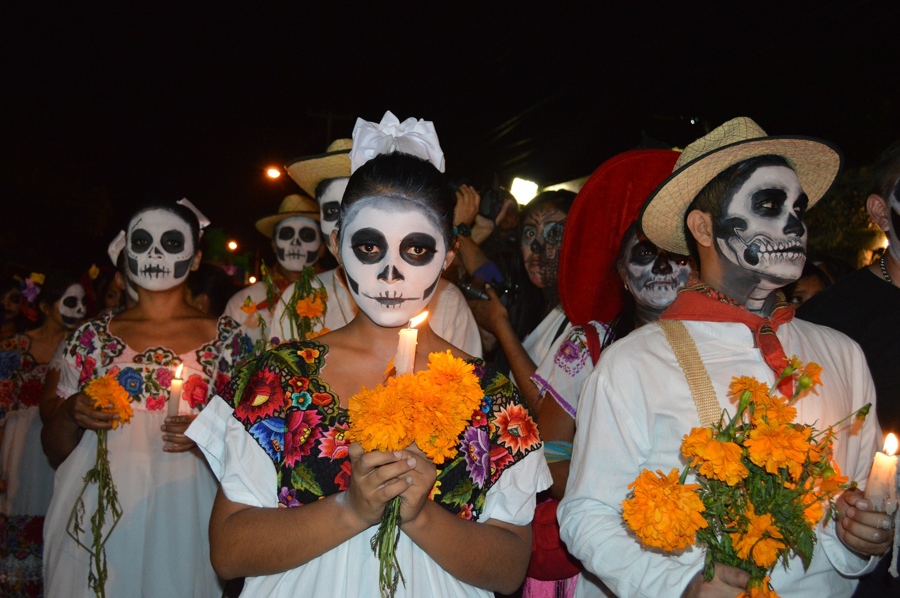
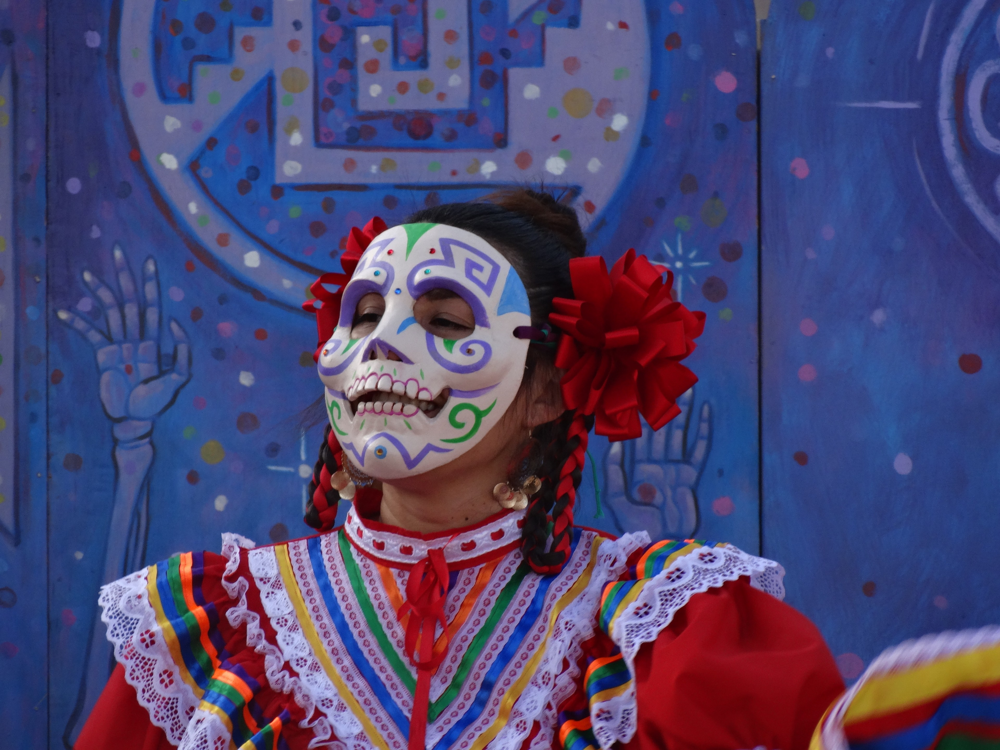
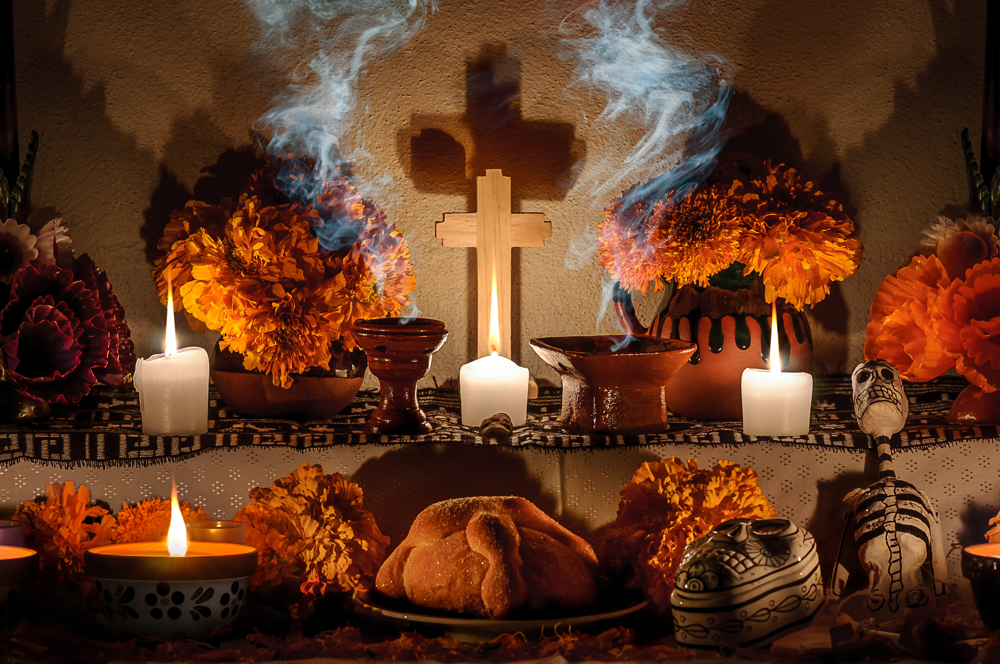

El Día de los Muertos es una tradición única que se celebra cada año principalmente el 1 y 2 de noviembre en todo México. Es un festival destinado a honrar a los antepasados muertos en la fecha en que se cree que sus almas regresan a la Tierra. Como México es un país grande y diverso, las tradiciones son tan variadas como el país en sí, pero hay tradiciones únicas que se han convertido en una de las más importantes y relevantes de México. Asi, la UNESCO declaró en el año de 2003, a la festividad indígena del día de muertos, Obra maestra del patrimonio cultural de la humanidad. Esta festividad representa uno de los ejemplos más relevantes del patrimonio vivo de México y del mundo, así como una de las expresiones culturales más antiguas y de mayor plenitud de los grupos indígenas que actualmente habitan en nuestro país.
Al contrario de lo que a menudo se retrata en la cultura popular, el Día de los Muertos no es la versión mexicana de Halloween. A pesar de que caen en la misma época del año y tienen similitudes, los dos son días festivos diferentes con orígenes separados y tradiciones únicas. Halloween tiene su origen en el festival de la cosecha celta de Samhain, mientras que el Día de los Muertos tiene sus raíces en las antiguas tradiciones religiosas de la población indígena de Mesoamérica. Halloween, como se practica hoy en día, implica truco o trato, usar disfraces y decorar calabazas. Las tradiciones del Día de los Muertos no incluyen ninguna de esas cosas. En Halloween, los espíritus son vistos como algo aterrador, o algo para evitar. El Día de los Muertos se enfoca en recibir las almas de los parientes muertos con alegría y hospitalidad.
Como se mencionó anteriormente, las raíces del Día de los Muertos son profundas en la historia de México y se remontan a los días anteriores a la conquista española. Las civilizaciones precolombinas tuvieron una variedad de celebraciones destinadas a honrar a los muertos.. Sin embargo, muchas de las tradiciones que conocemos hoy provienen de las prácticas religiosas de los aztecas, que creían que existían diferentes vidas posteriores dependiendo de cómo muriera la gente. Uno de ellos es Mictlán, el destino final para quienes murieron por causas naturales, y gobernados por la diosa Mictecacíhuatl, a menudo representada por una calavera. Los aztecas creían que para llegar a Mictlán, las almas tenían que completar un arduo viaje. Para ayudar al difunto a lo largo de este viaje, los aztecas hacían ofrendas de objetos útiles en los sitios de entierro de sus familiares. Varias fiestas aztecas involucraban rituales para honrar a los fallecidos, incluyendo decorar tocones de árboles y colocar ofrendas para parientes muertos. Estas tradiciones sientan un precedente para los Ofrendas, o altares del Día de los Muertos colocados hoy por las familias mexicanas. Después de la colonización, estas tradiciones se cristianizaron y se incorporaron a las fiestas católicas del Día de Todos los Santos y del Día de Todas las Almas, produciendo un sincretismo único de tradiciones. Las tradiciones se trasladaron del verano al 1 y 2 de noviembre para coincidir con estos dos días.
En los días previos a las vacaciones, es costumbre construir un santuario para honrar a los familiares fallecidos. Estos santuarios, conocidos en español como "Ofrendas", son brillantes, coloridos y ornamentados. Están adornados en naranja y morado, los colores tradicionales de las fiestas, y decorados con flores, incluidas las maravillas, y artesanías de papel decoradas, incluido el tradicional "papel picado". Colocados encima de estos altares hay fotografías de los fallecidos , objetos que eran preciosos para ellos. y comidas que disfrutaron en la vida. Estos se sientan junto a calaveras de azúcar, velas, el tradicional Pan de Muertos, cruces y estatuas e íconos de Jesús y los Santos. Los mexicanos seculares y no católicos a menudo evitarán colocar esta iconografía religiosa en sus Ofrendas. Durante las vacaciones, las Ofrendas no solo se colocan en hogares, sino también en escuelas, oficinas y plazas públicas. En ciudades de todo México, las Ofrendas públicas se convierten en un espectáculo en sí mismo, atrayendo a decenas de personas para ver estos magníficos altares a gran escala ubicados a la vista del público. A menudo están hechos por artistas conocidos, adoptan un tema anual y están destinados a honrar a figuras importantes de la historia y la cultura mexicana.
